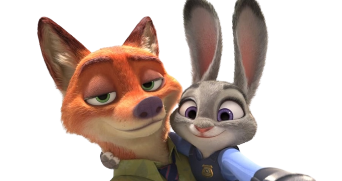
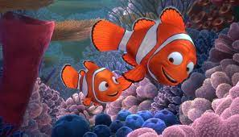

Esta página tem o dobro da ação da barra de rolagem em uma só! Role até a parte inferior da página e depois para a direita para encontrar o link para a próxima página.
Indicação de filme
SINOPSE:
Zootopia
Em Zootopia: Essa Cidade é o Bicho, acompanhamos a história de Judy Hopps, uma pequena fazendeira que é filha de agricultores. Insatisfeita com a vida no interior, ela tem sonhos maiores: se mudar para a cidade grande, Zootopia, e se tornar a primeira coelha policial. Quando Judy consegue alcançar o seu objetivo, ela é designada para a sua primeira e grande missão, que é encontrar um animal perdido. Contando com a ajuda inesperada de Nick, uma raposa conhecida por sua malícia e infrações, ela descobre que existe uma conspiração que afetará toda a cidade.

Procurando Nemo
Nemo é um pequeno e simpático peixe-palhaço, que repentinamente é sequestrado do coral onde vive por um mergulhador e passa a viver em um aquário. Longe de seu pai, que tanto o advertiu quanto aos perigos dos mares, Nemo constrói laços de amizade com seus companheiros de cativeiro. Enquanto isso, Marlin, seu tímido e devotado pai, sai em sua busca, tendo como parceira a ingênua e distraída Dory.
